Google.org, Microsoft & Anthropic
Non-profit technology partnerships and platform support for Urdu AI education — reaching communities excluded from English-first technology.
Trust & collaboration
WANG operates as a transparent Pakistani non-profit. These relationships are representative — not exhaustive — of the validation and co-investment behind our field programs and national products. For NGO directories, research PDFs, and workshop listings, see Media & documentation.
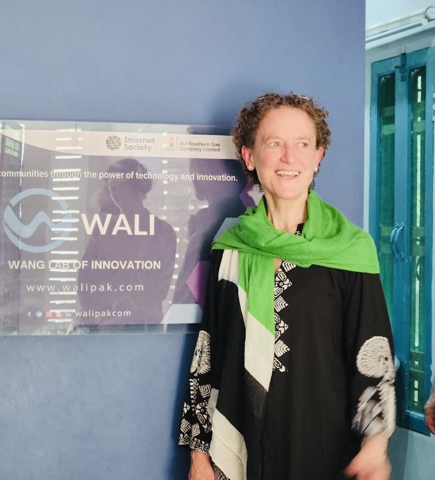
Our partners


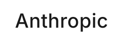


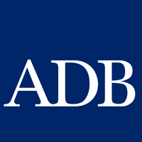
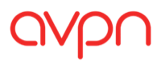


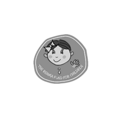


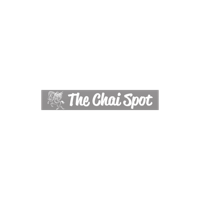
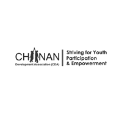
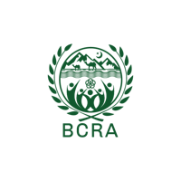
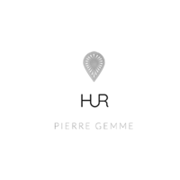
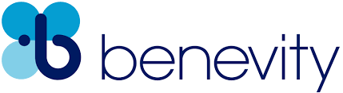
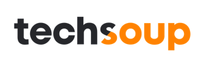
How they contribute
Non-profit technology partnerships and platform support for Urdu AI education — reaching communities excluded from English-first technology.
Development funding and capacity building for youth empowerment, climate resilience, and community innovation programs.
Scottish scholarship scheme, sports for development, and educational exchange programs reaching rural students.
Global civil-society networks documenting WALI, WIRE, and connectivity work as part of wider digital inclusion narratives.
Development finance, gender equity research, and girls' education storytelling that amplify WANG's field work to international audiences.
Verified non-profit
WANG is verified on Benevity, the global platform connecting corporations with vetted non-profits for workplace giving and grants.
TechSoup-verified non-profit with access to donated and discounted technology from Microsoft, Canva, Anthropic, and other partners.
Verified on Goodstack (powered by TechSoup), enabling WANG to access non-profit programs from leading technology companies worldwide.
Next step